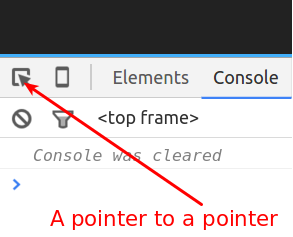

Without this we are nothing
Follow along at:
http://neontribe.github.io/JSDebugWorkshopA collection of methods provided to web applications
Which means you can, if you want, drop them into your own code
What follows are just some highlights from the docs
console.log('hello, world');
// The comma's there for Frank
var ragbag = ['All', 'manner', ['of'], {stuff: '!'}];
console.log.apply(console, ragbag);
var home = 'norwich';
console.log('hello %s', home.toUpperCase());
You can format expandable items into your string...
var element = document.querySelector('section');
var object = {expandable: 'me'};
console.log('Elements %o and Objects %O', element, object);
console.warn("You'll ignore this");
console.error("But maybe not this");
console.error() comes with a free stack trace!
If you want one of your own you can use:
function traceMe () {
console.trace("My first voluntary stack trace");
}
traceMe();
var list = document.querySelectorAll('section');
console.assert(list.length < 40, "Surely too many sections?");
function debugMe () {
debugger;
}
debugMe();
More about the debugger later...
var items = [
{type: 'foo', value: 'baz'},
{type: 'bar', value: 1},
{type: 'foo', value: null}
];
console.table(items);
console.time('My Timer');
setTimeout(function(){
console.timeEnd('My Timer');
}, 1500);
Convenience functions for common developer tasks
Only available from within the console itself
Highlights from the docs
Select stuff using the pointery thing
Get them in the console with $0 to $4
$('section');
// Returns THE FIRST section element in the document
$$('code');
// Returns ALL the code elements in the document
$x('html/body/script');
// XPATH!!
Access the value of the last executed expression
Mostly for when you forgot to assign it to a variable...Copies a string representation to your clipboard
Copying DOM elements gets you HTML
Copying Objects gets you JSON
Displays an element in the elements panel, try:
inspect($('body section:first-of-type'));
You can use it on heap objects or functions too!
Invokes the debugger when the function supplied is called
Logs function arguments on call, try the following:
monitor(ragbag.noop);
ragbag.noop('this', 'that', 'the other');
Customers who bought monitor() also bought unmonitor()
Logs events on an object (normally a DOM element)
monitorEvents(window.document.body, 'contextmenu');
Customers who bought monitorEvents() also bought unmonitorEvents()
git clone git@github.com:neontribe/JSDebugWorkshop.git
or
git clone https://github.com/neontribe/JSDebugWorkshop.git
cd JSDebugWorkshop
nvm install
npm install
npm run start
and head over to
http://localhost:9898Pick an issue from this list, read the replication instructions and try to find the problem:
Starter Issues